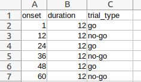
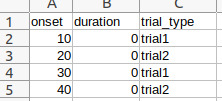

Get_Conditions_From_BIDS_tsv brick¶
Get conditions information (conditions names, onsets and durations) for Level1Design brick using tsv files as defined by BIDS One tsv file should be used by session.
The events.tsv file should contains a column “onset” (onset (in seconds) of the event,), a column “duration” (duration of the event (measured from onset) in seconds.) and one column “trial_type” (primary categorisation of each trial to identify them as instances of the experimental conditions).
Example for a bloc design:
{kind=link}
Example for an event design:
{kind=link}
Inputs parameters:
- tsv_files (a list of existing csv files):
tsv files contening the conditions information for each condition. The tsv file sgould be organized as defined by BIDS for the events files. One tsv file should be used by session.
ex. ['/home/username/MIA_projects/data/downloaded_data/sub-001_ses-01_task-bloc_events.tsv', '/home/username/MIA_projects/data/downloaded_data/sub-001_ses-02_task-event_events.tsv']
Outputs parameters:
- cond_names (a list of string):
The list of the conditions names.
ex. [['go', 'no-go'], ['trial1', 'trial2']]
- cond_onsets (a list of list of float):
The list of the conditions onsets.
ex. [ [ [1.0, 24.0, 48.0], [12.0, 36.0, 60.0] ], [ [10.0, 30.0], [20.0, 40.0] ] ]
- cond_durations (a list of string):
The list of the conditions duration.
ex. [ [ [12.0, 12.0, 12.0], [12.0, 12.0, 12.0] ], [ [0.0, 0.0], [0.0, 0.0] ] ]
Useful links: